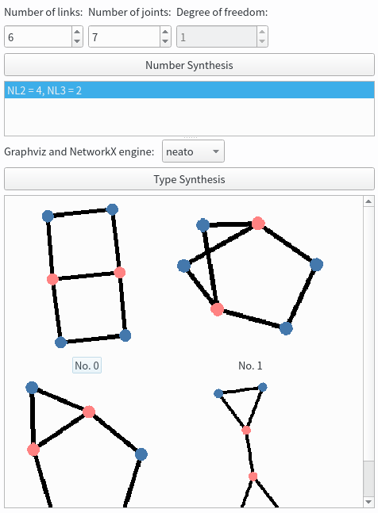

-
QIcon 透明背景繪製
-
Graphviz 引擎限制
QIcon 透明背景繪製
使用 QImage 取代 QPixmap 可以繪製出具有透明背景的圖示或影像。
image = QImage(QSize(*rect), QImage.Format_ARGB32_Premultiplied)
image.fill(Qt.transparent)
painter = QPainter(image)
painter.translate(image.width()/2, image.height()/2)
painter.end()
return QIcon(QPixmap.fromImage(image).scaledToWidth(width))
從 QIcon 轉為 QPixmap 可以用 pixmap(size: QSize) 或 pixmap(w: float, h: float) 方法。
listWidget.currentItem().icon().pixmap(listWidget.iconSize())
Graphviz 引擎限制
NetworkX 透過 PyGraphviz 引入 Graphviz 的繪圖演算法，提供更好的節點位置在圖譜中表現。
Graphviz 引擎如下：
- dot
- neato
- fdp
- twopi
- circo
其中 circo 和 neato 的效果較符合圖譜期望。
NetworkX 引擎如下：
- kamada kawai（有 SciPy 需求因此未加入）
- shell
- circular
- spring
- spectral
- random
其中較適合的為 shell，random 為隨機產生。
很遺憾的是，Windows x64 的 Python 無法安裝 PyGraphviz，因此 Pyslvs 目前只有 Ubuntu 版本提供 Graphviz 引擎。
而經測試，AppImage 技術由於只將 PyGraphviz 包入，端口程式庫仍然連接 Graphviz 程式庫，所以 Ubuntu 用戶必須安裝 Graphviz。
sudo apt install graphviz
以下是瓦特與史帝芬生鍊用 neato 引擎排佈的結果。
